申し込む
用意する物は二つです。ウォレットのアプリ(暗号資産を入れておくアプリ・MetaMaskなど)と、noteの「本当にあった怖い話」の会員番号。この段では、お金は動きません。ETHもまだ要りません。
-
1
スマホで、受け取りのページを開く。
-
2
MetaMaskのアプリで開く
を押す。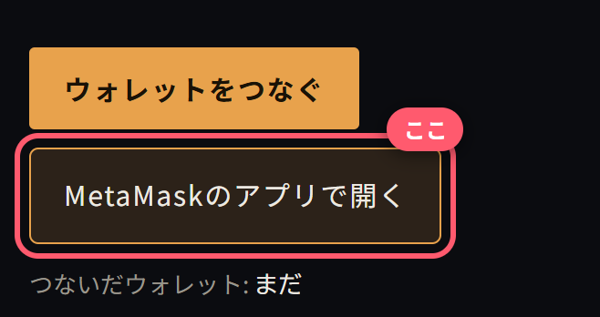
赤い印のボタンです。上の「ウォレットをつなぐ」は、まだ押しません。 ウォレットのアプリの中のブラウザで開いている方には、このボタンは出ません。そのまま3へ進んでください。
-
3
ウォレットをつなぐ
を押す。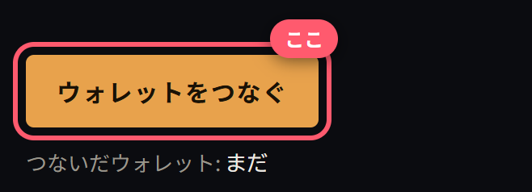
赤い印の、オレンジのボタンです。 -
4
ウォレットの窓が開くので、接続を許す方のボタンを押す。
WALLETここはウォレットのアプリの窓です。「このサイトに接続しますか」という意味の文が出ます。許す方(「接続」など)を押してください。お金は動きません。ボタンの文字は、ウォレットの種類で少し違います。 -
5
緑の一行が出たのを確かめる。
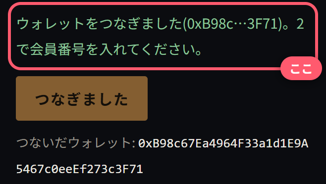
赤い印の一行が出れば、つながっています。下の「つないだウォレット:」の後ろが、あなたのウォレットのアドレスです。 -
6
会員番号を、数字だけ入れる。
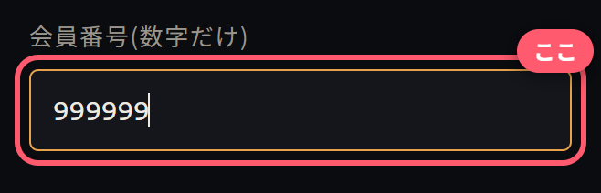
赤い印の欄です。会員番号は、noteのメンバーシップのページで確かめられます。 -
7
受け取りの一行を作る
を押す。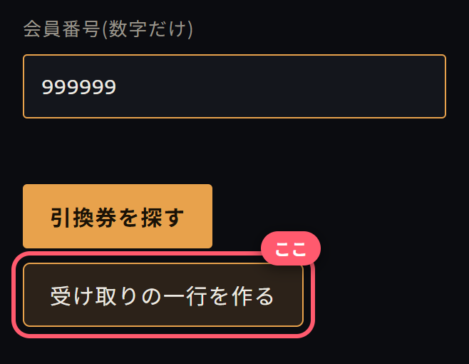
赤い印の、下のボタンです。上の「引換券を探す」は、受け取る日に使います。 -
8
写す
を押す。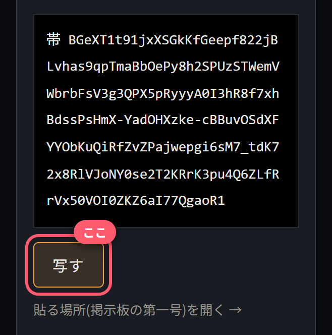
赤い印のボタンで、上の長い一行がコピーされます。この一行の中の番号とアドレスは暗号になっていて、他の会員の方には読めません。 -
9
貼る場所(掲示板の第一号)を開く
を押す。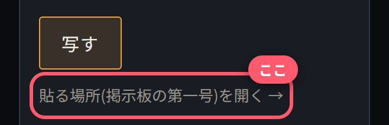
赤い印の文字です。noteの会員の掲示板の「捕虜の日報第一号」が開きます。 -
10
開いた投稿の返信の欄に、一行を貼って送る。
何も足さず、写した一行だけを貼ってください。掲示板は会員の方だけの場所なので、ここに絵は載せていません。
ここまでで、申し込みは終わりです。
引換券を待つ
運営が、貼ってくださった方と番号の持ち主が同じ方かを確かめ、続けた月の数から帯の色を決めて、引換券(あなたのウォレット宛ての、偽造できない受け取りの券)を出します。出た時は、掲示板の「捕虜の日報第一号」の下でお知らせします。日数がかかる事が在ります。引換券の期限は、出た日から30日です。
手数料を用意する
受け取りの時だけ、Optimism(オプティミズム)というネットワークの上のETHが、ほんの少し要ります。ETHは、手数料を払うための暗号資産です。もうウォレットにOptimismのETHが在る方は、この段を飛ばしてください。
-
1
自分のウォレットのアドレスを写す。
受け取りのページでウォレットをつなぐと、「つないだウォレット:」の後ろに出ます。0xで始まる42文字です。長押しで写せます。
-
2
ETHを持っている所で、ETHの「送る」(出金)を開く。
暗号資産の取引所の口座や、別のウォレットの事です。
-
3
ネットワークを選ぶ所で、Optimismを選ぶ。
選ぶOptimism(「OP Mainnet」と書いてある所もあります)選ばないEthereum・ERC20・Arbitrum・Base・BNBなど。名前が近くても、別のネットワークです。そちらで送ると、同じアドレスの別のネットワークに届き、帯の受け取りには使えません。送らない「OP」という名前のトークン。ETHとは別の物で、手数料には使えません。送るのはETHです。 -
4
宛先に、1で写したアドレスを貼る。
手で打たず、必ず貼り付けてください。貼った後、頭の4文字と終わりの4文字が合っているかを見てください。宛先は、申し込みに使った自分のウォレットです。別のウォレットに入れても、受け取りには使えません。
-
5
0.0005ETHを目安に送る。
実際に引かれる手数料は、一番多かった回でも0.0000002ETHで、一円に届きません。0.0005ETH(2026年11月18日の昼の値で、百四十円ほど)は、ウォレットが手数料を高めに見積もっても止まらないように、余裕を見た額です。送る元には、送れる一番小さい額と、送る時の手数料が決まっています。額は、送る元の画面で確かめてください。
送る前に、三つだけ
秘密の言葉は、誰にも教えない。ウォレットを作った時に出る12個ほどの英単語の事です。運営が聞く事は、DMでも掲示板でも、絶対にありません。聞かれたら、偽者です。
帯の契約のアドレスには、送らない。受け取りのページの上の方に小さく出ている「帯の契約0x273f…」は、送り先ではありません。送ると戻りません。
もうEthereumの側にETHを持っている方へ。ウォレットの「ブリッジ」という機能でOptimismへ移せますが、Ethereumの側の手数料が別にかかり、帯の手数料よりずっと高くなります。ブリッジの画面に出る額を見てから決めてください。
受け取る
引換券が出たお知らせが在った後に、行います。申し込みの時と同じウォレットで開いてください。引換券は、そのウォレット宛てです。
-
1
ウォレットのアプリの中で、受け取りのページを開く。
-
2
会員番号を入れて、
引換券を探す
を押す。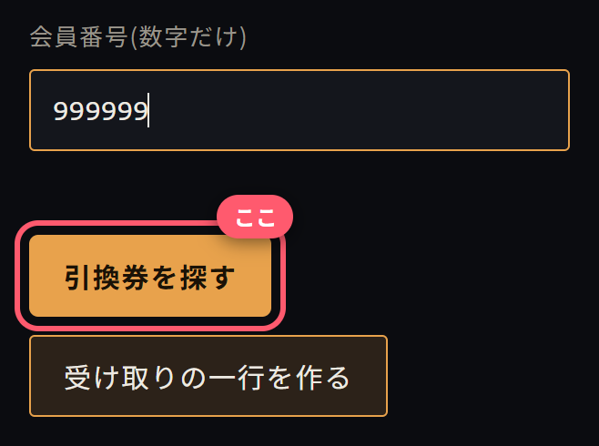
赤い印の、オレンジのボタンです。 -
3
緑の一行が出たのを確かめる。
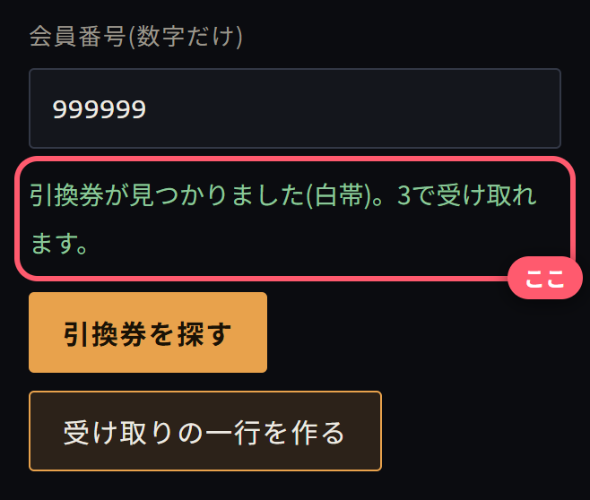
赤い印の一行が出れば、引換券が在ります。 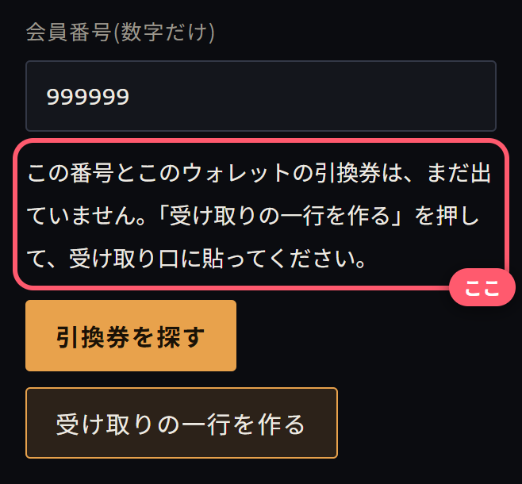
こちらの文が出た時は、まだ出ていません。申し込みが済んでいれば、お知らせを待ってください。 -
4
下へ進み、
ウォレットで承認して受け取る
を押す。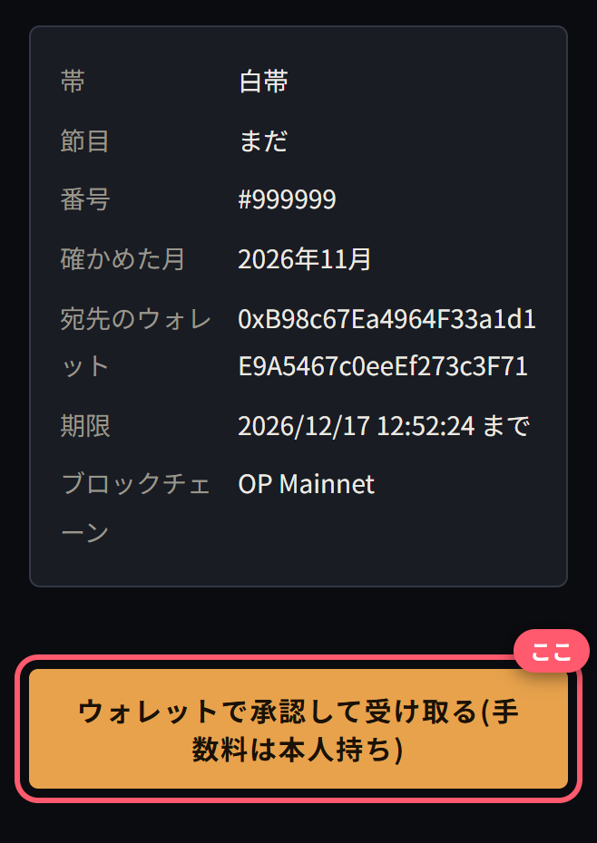
赤い印のボタンです。押す前に、上の一覧の帯の色と番号を見てください。 -
5
ウォレットの窓で、承認する方のボタンを押す。
WALLETここはウォレットのアプリの窓です。先に「ネットワークをOP Mainnetに切り替えますか」と聞かれた時は、許す方を押します。次に、手数料の書かれた窓が出るので、承認する方(「確認」など)を押します。 -
6
「受け取りました」と出るまで、数十秒待つ。
ボタンの上に「白帯を受け取りました。」のように、帯の色の名前で出ます。これで終わりです。この最後の画面は、運営の佐藤が自分のウォレットを持てないため、絵に出来ていません。
止まった時
受け取りのページは、止まった時に必ず赤い文を一行出します。その文で、する事が決まります。
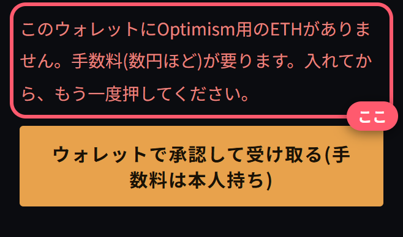
- このWebサイトは有害な可能性があります(ウォレットのアプリが出す、赤い三角の警告)
- 進めずに、閉じてください。「承知の上で続ける」は押しません。古い場所(genmatsuda-code.github.io)で出ます。新しい場所(zenination.gen-matsuda.co)の受け取りのページで開き直してください。新しい場所でも出た時は、掲示板で知らせてください。
- このウォレットにOptimism用のETHがありません / 足りません
- 03手数料を用意するへ。入れた後、同じボタンをもう一度押します。
- この画面にはウォレットが入っていません
- 普通のブラウザで開いています。「MetaMaskのアプリで開く」を押して、ウォレットのアプリの中で開き直します。
- この番号とこのウォレットの引換券は、まだ出ていません
- 申し込みが済んでいれば、お知らせを待ちます。申し込みの時と別のウォレットでつないでいないかも、見てください。
- この引換券は別のウォレット宛てです / 引換券の宛先ではありません
- ウォレットのアプリで、申し込みの時のウォレットに切り替えます。
- ウォレットのネットワークを「OP Mainnet」に切り替えてから
- ウォレットのアプリで、ネットワークをOP Mainnet(Optimism)に替えてから、同じボタンをもう一度押します。
- ウォレットで取り消されました
- 何も起きていません。同じボタンをもう一度押せば、やり直せます。
- 引換券の期限(発行から30日)が過ぎています
- 掲示板で一言ください。出し直します。
どれでもない時、読んでも分からない時は、本怖の掲示板で「帯の受け取りで止まった」と一言ください。出ている赤い文をそのまま貼っていただけると、早く分かります。運営(佐藤)が返します。